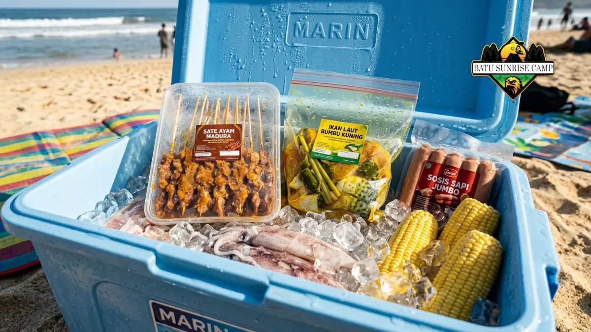

Alat bbq portable untuk camping di pantai yang ideal adalah grill lipat berbahan tahan karat, ringan dibawa, stabil di atas pasir, dan dilengkapi bahan bakar yang mudah dinyalakan meski tertiup angin laut.
Apa Itu Alat BBQ Portable untuk Camping Pantai?
Alat bbq portable untuk camping pantai adalah perangkat panggang berukuran kecil hingga sedang yang dirancang mudah dibawa, dilipat, dan digunakan di area terbuka tanpa sumber listrik.
Alat ini menjadi kebutuhan pokok dalam resep bbq saat camping di pantai karena kondisi lapangan yang berpasir, berangin, dan minim fasilitas menuntut peralatan yang ringkas namun tetap stabil saat digunakan.
Berbeda dengan grill rumahan yang cenderung besar dan berat, alat portable untuk pantai umumnya memiliki kaki lipat, bobot ringan, dan desain yang memudahkan pembersihan pasir maupun sisa abu setelah dipakai.
Jenis Alat BBQ Portable Apa Saja yang Cocok untuk Pantai?
Jenis alat bbq portable yang cocok untuk pantai terbagi menjadi dua kategori utama, yaitu grill berbahan bakar arang dan grill berbahan bakar gas kaleng, masing-masing dengan karakteristik berbeda.
Grill arang portable umumnya berbentuk kotak atau bulat dengan kaki lipat, menggunakan arang kayu atau briket sebagai sumber panas.
Jenis ini memberikan aroma khas panggangan dan cocok untuk sesi BBQ yang lebih santai karena butuh waktu menyalakan bara terlebih dahulu.
Kompor gas portable dengan plat panggang di atasnya lebih praktis karena bisa langsung dinyalakan tanpa menunggu bara.
Jenis ini lebih diminati untuk rombongan yang ingin memasak cepat, meski perlu membawa tabung gas kaleng cadangan.
Selain dua jenis utama tersebut, ada juga grill lipat mini berbahan baja tahan karat yang lebih ringkas, cocok untuk rombongan kecil atau camping solo.
Bagaimana Kriteria Memilih Alat BBQ Portable yang Tahan Kondisi Pesisir?
Kriteria memilih alat bbq portable yang tahan kondisi pesisir adalah bahan tahan karat, struktur kaki yang stabil di permukaan tidak rata, serta bobot yang masih nyaman dibawa berjalan kaki menuju lokasi camping.
Beberapa aspek yang perlu diperhatikan saat memilih:
- Material tahan karat, seperti baja anti karat atau besi cor berlapis, karena udara pantai mengandung kadar garam yang mempercepat korosi pada logam biasa.
- Kaki yang bisa disetel atau memiliki alas lebar agar tetap stabil meski diletakkan di atas pasir yang tidak rata.
- Ukuran ruang panggang yang disesuaikan dengan jumlah rombongan, agar tidak terlalu kecil untuk keluarga besar atau terlalu besar untuk camping berdua.
- Bobot dan dimensi terlipat yang praktis dimasukkan ke dalam tas atau bagasi kendaraan.
- Ventilasi udara pada grill arang yang dapat diatur, sehingga nyala bara lebih mudah dikendalikan saat angin kencang.
Apa Perlengkapan Pendukung yang Wajib Dibawa Selain Grill?
Perlengkapan pendukung yang wajib dibawa selain grill adalah sumber bahan bakar cadangan, alat bantu menyalakan api, wadah penyimpanan bahan, serta alat kebersihan untuk membersihkan alat setelah digunakan.
- Arang atau tabung gas kaleng cadangan, karena kebutuhan bahan bakar di pantai sering lebih boros akibat angin.
- Pemantik angin atau korek gas panjang yang tetap menyala dalam kondisi berangin.
- Cooler box atau tas pendingin untuk menjaga bahan mentah tetap segar sejak dari rumah hingga lokasi.
- Wadah kedap udara untuk bumbu dan marinasi agar tidak tumpah atau terkontaminasi pasir.
- Sarung tangan tahan panas, penjepit bertangkai panjang, dan talenan kecil.
- Kantong plastik tebal untuk membawa pulang sisa abu dan sampah agar area pantai tetap bersih.

Cooler box berisi bahan BBQ segar: sate ayam, ikan bumbu kuning, cumi, sosis sapi, dan jagung manis siap dipanggang di pantai.
Bagaimana Cara Merawat Alat BBQ Setelah Dipakai di Pantai?
Cara merawat alat bbq setelah dipakai di pantai adalah membersihkan sisa abu dan pasir sesegera mungkin, mengeringkan seluruh bagian logam, lalu menyimpannya di tempat yang tidak lembap.
- Buang sisa abu dan bara yang sudah benar-benar padam ke kantong sampah tertutup, jangan meninggalkannya di pasir.
- Bersihkan permukaan panggangan menggunakan air tawar untuk menghilangkan sisa garam dan pasir yang menempel.
- Keringkan seluruh bagian logam dengan kain bersih sebelum dilipat dan disimpan, karena kelembapan mempercepat karat.
- Olesi bagian besi cor dengan sedikit minyak goreng tipis sebagai lapisan pelindung tambahan jika alat akan disimpan dalam waktu lama.
- Simpan alat di tempat kering dan tidak terkena hujan langsung agar komponen logam maupun engsel lipatan tetap awet.
Perawatan yang konsisten ini penting mengingat aktivitas camping di area pesisir kemungkinan akan terus diminati, sejalan dengan proyeksi pertumbuhan pasar camping Indonesia.
Pendapatan segmen camping dalam pasar perjalanan dan pariwisata Indonesia diproyeksikan meningkat total 39,9 juta dolar AS atau 64,83 persen antara 2024 dan 2029, mencapai puncak baru senilai 101,48 juta dolar AS pada 2029, menurut data Statista Market Insights, yang mengindikasikan alat BBQ portable akan makin sering digunakan dalam jangka panjang.
Kesimpulan
Memilih alat bbq portable untuk camping di pantai sebaiknya mempertimbangkan bahan tahan karat, kestabilan kaki di atas pasir, dan kepraktisan bahan bakar yang dibawa.
Grill arang cocok untuk pengalaman BBQ yang lebih santai dengan aroma khas, sementara kompor gas portable lebih pas untuk kebutuhan memasak cepat.
Yang tak kalah penting, perawatan setelah dipakai di area pesisir wajib dilakukan agar alat tidak cepat rusak akibat udara lembap dan garam.
Bagi yang ingin melihat langkah lengkap memasak setelah alat siap, dapat membaca artikel resep bbq saat camping di pantai sebagai panduan utama.